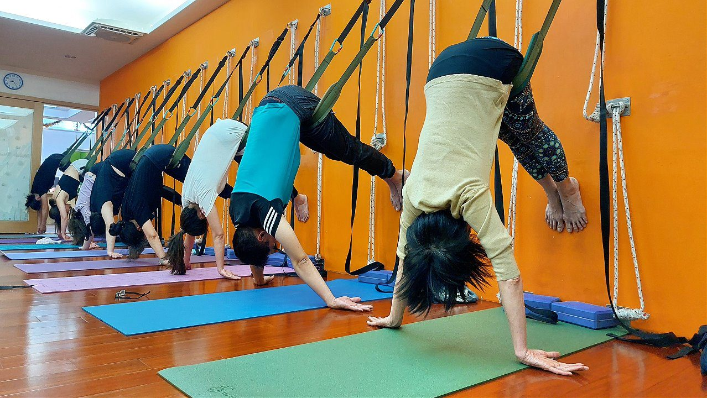
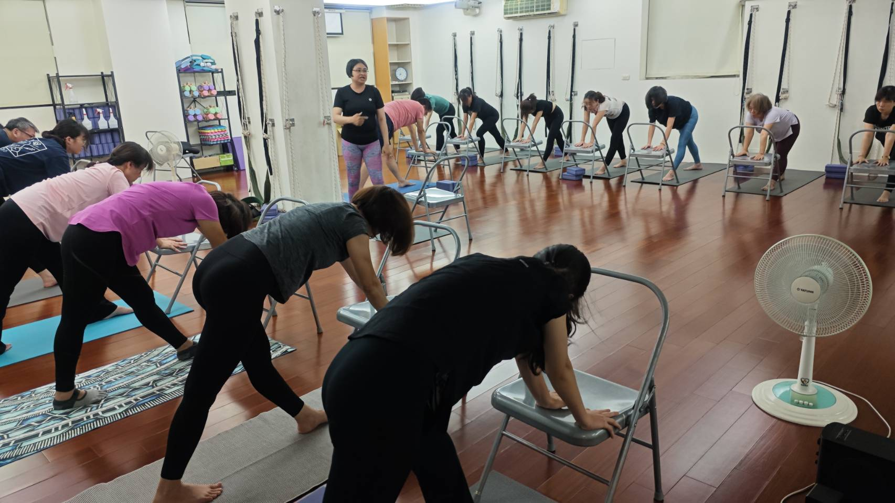

AI 體態檢測
⏱️ 約 20 分鐘
- 拍正面和側面，看肩線高低、頭部前傾、骨盆角度
- 老師當面跟你講報告，再建議適合的課
- 只做檢測、不報課也可以

身體很硬、怕跟不上團課，或肩頸一直緊，都可以從這裡挑一種開始。四種方式的費用、時間和適合誰，下面一次比清楚。
📍 巨蛋捷運站步行 5–7 分鐘 · Google 4.9★（91 則評論）· 首次體驗後要不要續課，你回家想好再說
鑫彥的首次課程分成四種：AI 體態檢測、零基礎入門班、壁繩瑜伽小團課、一對一肩頸調整。多數人卡在「不知道自己適合哪種」，可以照下表對：沒有明顯不舒服、只是身體硬，從入門班開始；常常肩頸緊又說不出原因，先做檢測；同一側反覆卡住、有舊傷顧慮，或時間排不進團課，選一對一。
| 你現在的狀況 | 建議起點 |
|---|---|
| 想先知道自己肩線、頭部、骨盆的角度，再決定怎麼練 | AI 體態檢測 |
| 很少運動、身體硬、怕跟不上一般團課 | 零基礎入門班 |
| 想每週固定練，借壁繩的支點做開胸、開髖 | 壁繩瑜伽小團課 |
| 肩頸反覆緊、同一側特別卡、有舊傷顧慮，或時間要自己排 | 一對一肩頸調整 |
⏱️ 約 20 分鐘
⏱️ 週一 09:30（60 分）、19:00（90 分）
⏱️ 每堂 60–90 分鐘，早午晚都有 · 費用以 LINE 當期公告為準
⏱️ 約 70 分鐘
瑜伽墊、壁繩、瑜伽磚、抱枕都由教室提供，不用另外買器材。
鑫彥的課由阿美老師（黃淑美）團隊帶，老師有 RYT-200 師資認證，並累積 180 小時以上艾揚格瑜伽研習。第一次上課，老師不會要你先做到標準動作，而是先看你怎麼動，再決定要加哪一種支撐。

做檢測的人，老師會對照報告；沒做檢測的，就看你做一兩個基本動作，留意你哪裡先出力。

手扶壁繩、腳踩地，身體有地方靠，比較不會一緊張就憋氣、聳肩。

看到你聳肩或憋氣，就幫你墊高磚、調繩長，或請你換一個用力的位置，再做一次。
從入門班用磚、壁繩借力，到老師在旁邊調整，這段影片是在鑫彥左營教室拍的。
「今天體驗了 AI 姿勢檢測+一對一壁繩調整，本來肩頸僵硬、腰部痠痛，訓練完後肩頸放鬆，腰部有力，呼吸順暢！」— 謝春姿 · AI 檢測＋一對一
「阿美老師很專業，引導我們用對肌肉部位，氣氛很活潑輕鬆，像是參加瑜伽派對。第一次上壁繩就遇到這麼棒的老師！」— 李曉玲 · 壁繩小團課
「做完 AI 檢測後，知道自己緊繃的部位及為何造成緊繃的原因；做完調整後緊繃位置有感放鬆！」— 景健亞 · AI 體態檢測
摘自 Google 商家公開評論，每個人的感受不同。
看全部 91 則 Google 評論 ↗ · 更多學員見證 →
鑫彥採小班制，當期人數上限可用 LINE 詢問。老師會走到每個人旁邊，看繩子位置、骨盆角度和手腕膝蓋有沒有吃力，需要時幫你換磚、加抱枕或調繩長。
多數人可以。壁繩讓你練的時候手有地方扶，比較不怕重心不穩，新手也不會被要求做倒立。上課前請先告訴老師哪裡不舒服。如果正在急性扭傷紅腫、手腳有像觸電一樣的放射性麻痛，或血壓還沒控制好，請先讓醫師評估再來上課。
高雄市左營區新庄仔路 726 號 3 樓，捷運紅線巨蛋站步行約 5–7 分鐘。穿有彈性的運動服，赤腳上課，帶水壺和小毛巾就好。在下方勾選方案和時段，按 LINE 就會帶入文字，傳給我們即可。交通細節看交通與聯絡。
勾選後，按鈕會幫你帶入 LINE 詢問文字，打開 LINE 按送出就好。
高雄市左營區新庄仔路 726 號 3 樓（近捷運巨蛋站）· 每日 09:00–20:30